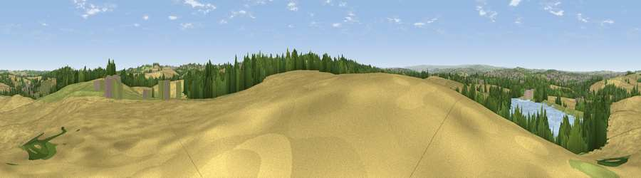

Viewpoint near Old Ravenfield
#19230 in England · top 26% of its area beats it · near Old RavenfieldWhere it is
The exact computed spot (SK 48075 95725). Click the marker for map links.
The view, rendered

A 360° render of this exact spot computed from the terrain model, tree cover and land cover — summer colours, afternoon light, calibrated against photographs of famous viewpoints. Real trees, hedges and buildings will differ in detail.
The panorama
Grey silhouette: terrain skyline in each direction (720 bearings, Earth curvature and refraction included). Dashed green: skyline with trees (+15 m) and buildings (+8 m) as obstacles. Blue strip: how far the ground is visible on each bearing.
Where the view opens
Wedge length = distance to the farthest visible ground on that bearing (vegetation-aware). Rings at 10, 25 and 50 km.
What fills the view
53% cropland · 17% grassland · 13% woodland · 12% water · 5% built-up
Angular shares of the visible panorama (visual magnitude), not map area. Landscape diversity 0.57 (0–1 Shannon).
Key numbers
More beautiful places nearby
The staircase of upgrades: each row has a higher view potential than everything closer. Driving times are estimates from straight-line distance, calibrated against real road routing — check an actual route before setting out.
| Place | Direction | Drive | Score |
|---|---|---|---|
| Viewpoint near Old Denaby | N · 3 km | ~7 min | 54.8 |
| Viewpoint near Cadeby | NNE · 6 km | ~13 min | 55.8 |
| Viewpoint near High Melton | NNE · 7 km | ~14 min | 58.5 |
| Viewpoint near Maltby | ESE · 7 km | ~15 min | 70.7 |
| Viewpoint near Whitley | W · 16 km | ~28 min | 72.1 |
| Viewpoint near Wharncliffe Side | W · 17 km | ~29 min | 75.2 |
| Viewpoint near Greenfield | W · 48 km | ~69 min | 76.0 |
| Viewpoint near Carrbrook | W · 49 km | ~70 min | 77.1 |
53.45609, -1.27747 · source: screening · position refined by local search. Computed location — check access rights before visiting.